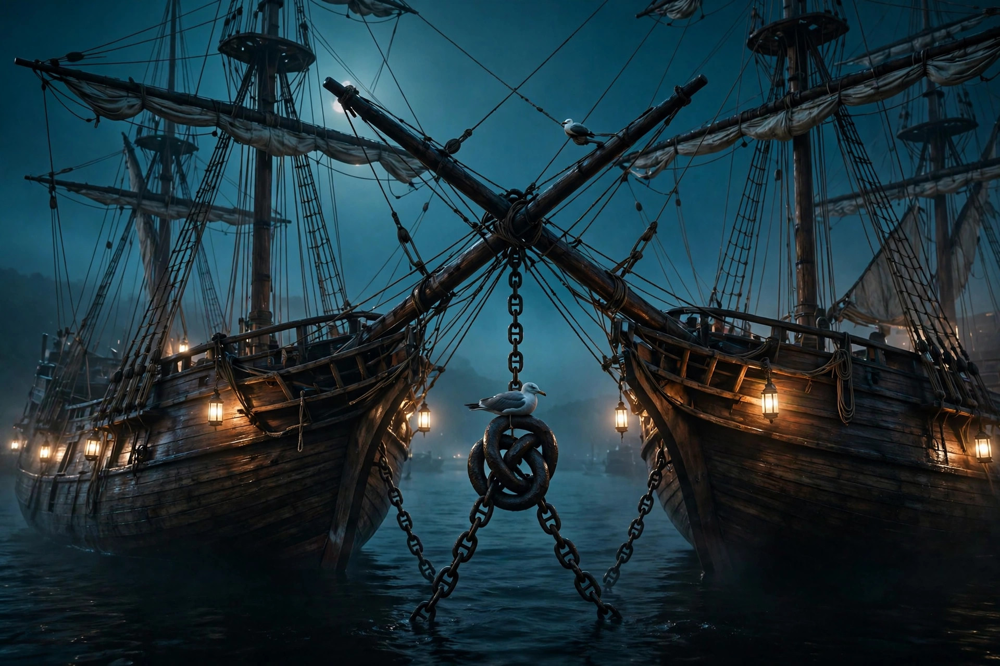

Athwart-hawse — the position of a ship at anchor that lies across the bow of another ship, so that her anchor cable runs across the other's. A crossed, tangled, dangerous berth.
Picture a crowded anchorage at night. Every ship swings slowly around her anchor with the wind and tide — and one of them swings across: her bow ends up parked in front of her neighbor's bow, her cable stretched over the neighbor's cable like a tripwire. Neither ship can move without grinding against the other, and if the weather turns, the two hulls and four cables become one problem. That predicament — not a maneuver, a predicament — is athwart-hawse.
The word is a photograph in two pieces: athwart, "across," and hawse, the bow of the ship where the anchor cables run out through the hawse pipes. Put together: "across the cable-eyes."
A direction, a body part, and a tangle — tap each:
Two Norse words, one bad night at anchor.
Three facts that have to be held together:
Two ships, two anchors, one X. Each vessel hangs from her own cable, and the cables cross — which means each ship is now partly moored to the other's ground tackle. Geometry has made them partners whether they like it or not.
Ships at anchor never sit still; they swing, surge, and sag with every shift of wind. Crossed ships swing into each other. Hulls grind, rigging fouls, cables chafe through — and clearing the mess in a rising gale, in the dark, was among the anchorage's worst chores.
The word sails with a crew of kin: foul hawse and clear hawse for tangled and untangled cables, athwart for anything lying crosswise to its proper course — and on dry land, thwarted, for every plan something has lain down across.
In the age of sail, fleets and merchantmen anchored in dense roadsteads, each captain choosing a berth by eye and instinct. Choose badly — or swing badly in the night — and you woke athwart somebody's hawse, with the whole anchorage watching you sort it out.
Early cables were hemp, thick as a man's thigh, and a crossed pair could chafe through in a single tide. Iron chain, arriving in the early 1800s, survived the chafe but tangled worse — clearing a foul hawse of chain could take a working party the better part of a day.
When crossed ships damaged each other, admiralty courts had to decide who lay athwart whom, and who had failed to keep a clear berth. The word earned a second life in case law: dry, precise, and attached to money — the surest way for a seaman's term to outlive the sea.
Modern harbors assign berths, and athwart-hawse has slipped out of working speech into dictionaries and word games — a fossil. But its root walks around unrecognized every day: every time a plan is thwarted, something has lain down athwart it.
1. A ship lying athwart-hawse is…
2. The "hawse" is…
3. "Athwart" is the living root of which modern word?
4. Why did sailors dread lying athwart-hawse?
You mine Blossom for prompt seeds — here's this one, ready to plant:

Tonight's render — spot the quiet impossibility.